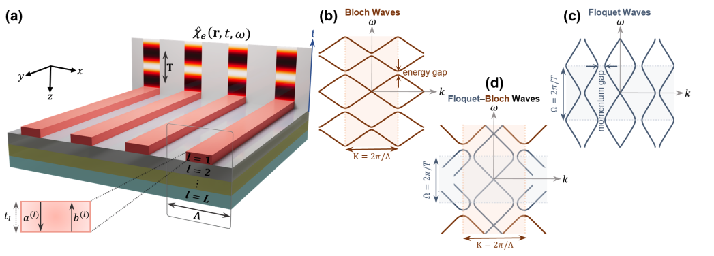
Floquet-Bloch Theory for Dispersive Time-Varying Metasurfaces
Under review at Nanophotonics (2026)

Under review at Nanophotonics (2026)
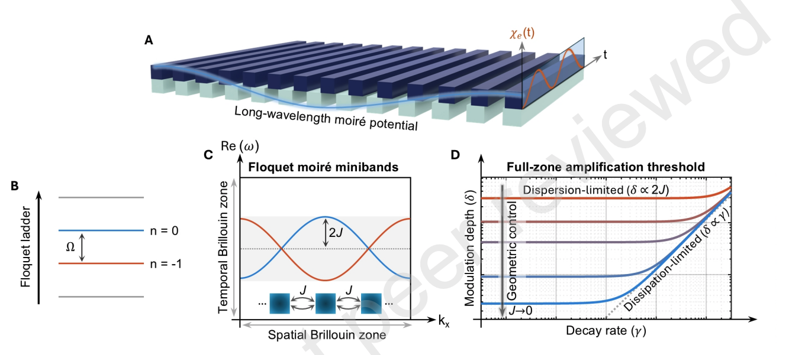
Under review at Newton (2026)
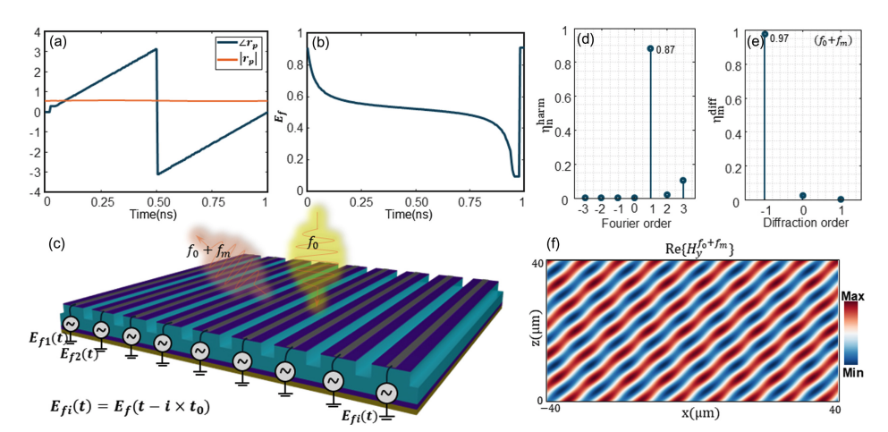
Journal of the Optical Society of America B, 43(8), 1538–1546
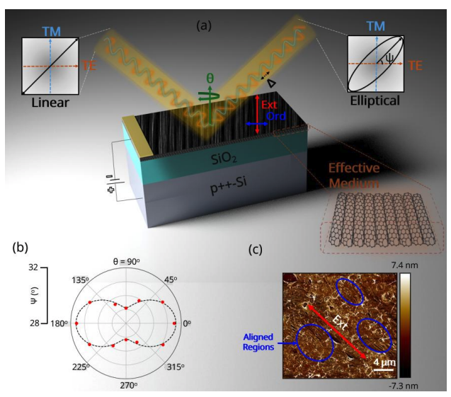
ACS Nano, 20(27), 19807–19819
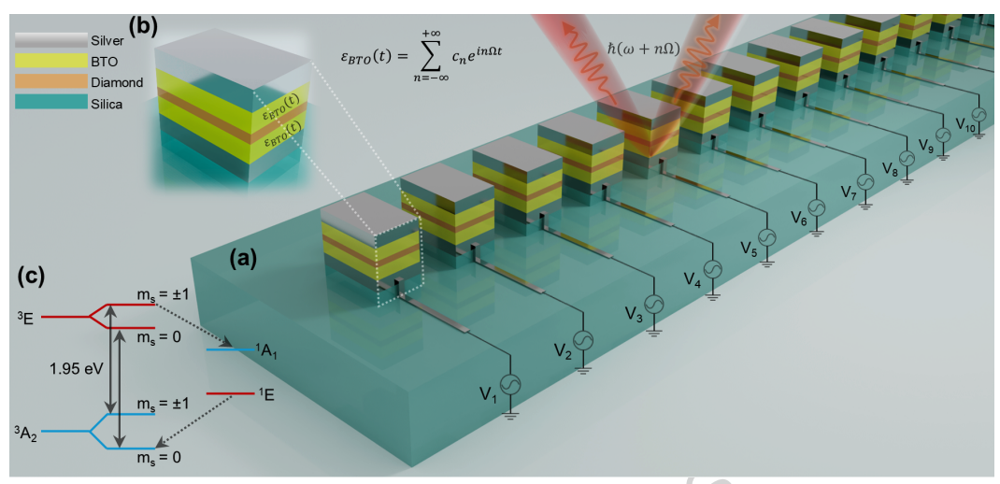
npj Nanophotonics, 3, Article 50 (2026)
* Equal contribution (co-first authors)
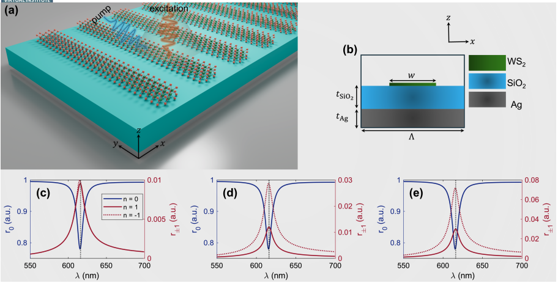
Metamaterials 2026, pp. 240–242
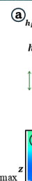
Metamaterials 2026, pp. 216–218
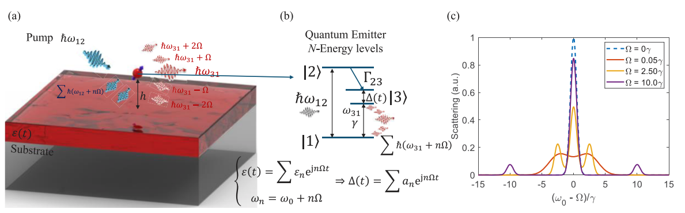
APL Quantum, 2(3), 036107
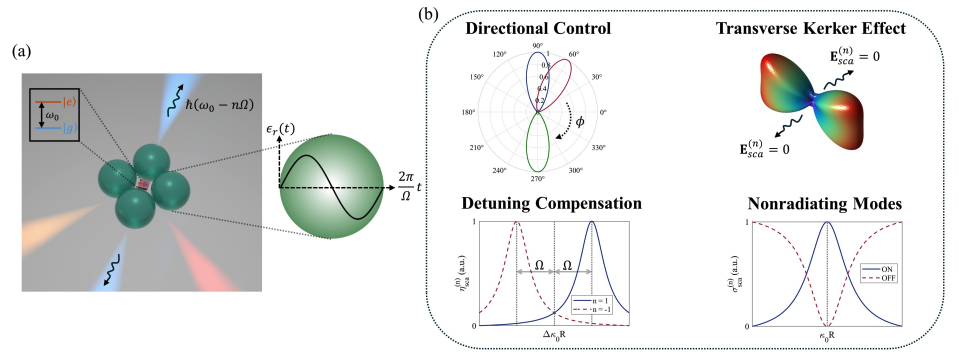
Physical Review B, 111(12), 125419
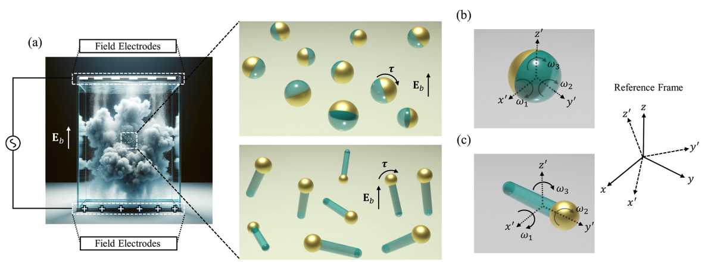
ACS Omega, 9(50), 49172–49187
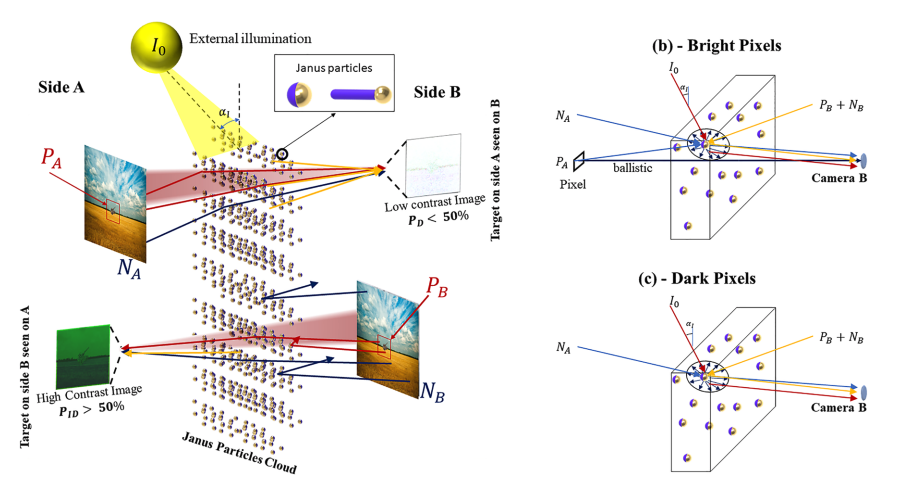
Scientific Reports, 14, Article 3850
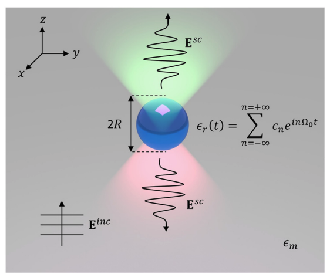
Applied Physics Letters, 123(10), 101702
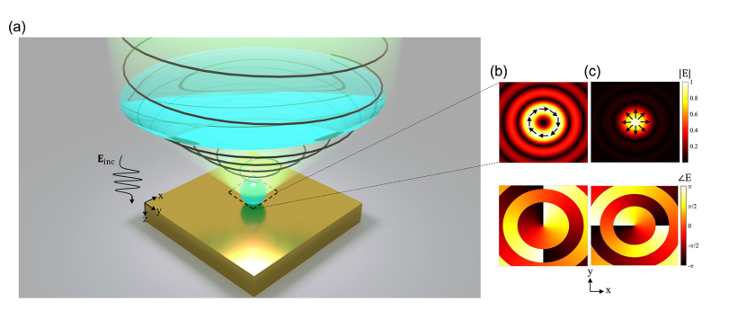
Advanced Photonics Research, 4(7), 2200224
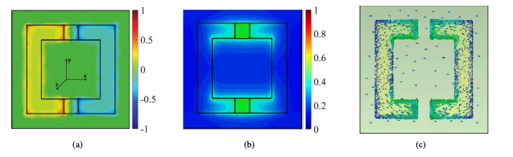
Current Applied Physics, 31, 132–140